Hazel 游戏引擎笔记 035：创建正交相机
本节来源：The Cherno 游戏引擎系列第 35 讲“创建正交相机”，时长约 38 分 27 秒。
原课程与 Hazel 代码作者：The Cherno。代码参考提交：c1d915e。
本文由视频字幕重构、翻译并整理，不是官方教材；术语和代码以原视频及同期 Hazel 仓库为准。
本节目标
第 34 讲已经规划了 Camera、View、Projection 与 Renderer 的数据流。本讲把这些设计真正写进 Hazel：
- 创建
OrthographicCamera； - 使用
glm::ortho()构造投影矩阵； - 用位置和 Z 轴旋转构造相机变换；
- 从相机变换的逆得到 View 矩阵；
- 缓存 ViewProjection 矩阵；
- 在 Shader 中接收
u_ViewProjectionuniform； - 为 Shader 增加
UploadUniformMat4()； - 把 Camera 参数加入
Renderer::BeginScene()； - 在
Renderer::Submit()中绑定 Shader 并上传场景 uniform； - 修正窗口宽高比导致的物体拉伸；
- 测试相机平移与旋转；
- 定位 GLM 位置向量未初始化造成的空白画面。
graph TD
A[OrthographicCamera] --> B[Projection Matrix]
A --> C[View Matrix]
B --> D[ViewProjection]
C --> D
D --> E[Renderer SceneData]
E --> F[u_ViewProjection Uniform]
F --> G[Vertex Shader]
📷 上一讲已经建立 Renderer 流程，本讲开始实现相机类
回到原视频 (00:01:00)
1. OrthographicCamera 的类形态
(参考时间: 00:01:29)
Hazel 明确区分不同相机类型，因此类名不是泛泛的 Camera，而是：
class OrthographicCamera
{
public:
OrthographicCamera(
float left,
float right,
float bottom,
float top);
const glm::vec3& GetPosition() const;
void SetPosition(const glm::vec3& position);
float GetRotation() const;
void SetRotation(float rotation);
const glm::mat4& GetProjectionMatrix() const;
const glm::mat4& GetViewMatrix() const;
const glm::mat4& GetViewProjectionMatrix() const;
private:
void RecalculateViewMatrix();
glm::mat4 m_ProjectionMatrix;
glm::mat4 m_ViewMatrix;
glm::mat4 m_ViewProjectionMatrix;
glm::vec3 m_Position = { 0.0f, 0.0f, 0.0f };
float m_Rotation = 0.0f;
};
明确的类型名称也为未来的 PerspectiveCamera 留下空间。
classDiagram
class OrthographicCamera {
-mat4 m_ProjectionMatrix
-mat4 m_ViewMatrix
-mat4 m_ViewProjectionMatrix
-vec3 m_Position
-float m_Rotation
+SetPosition(vec3)
+SetRotation(float)
+GetProjectionMatrix()
+GetViewMatrix()
+GetViewProjectionMatrix()
-RecalculateViewMatrix()
}
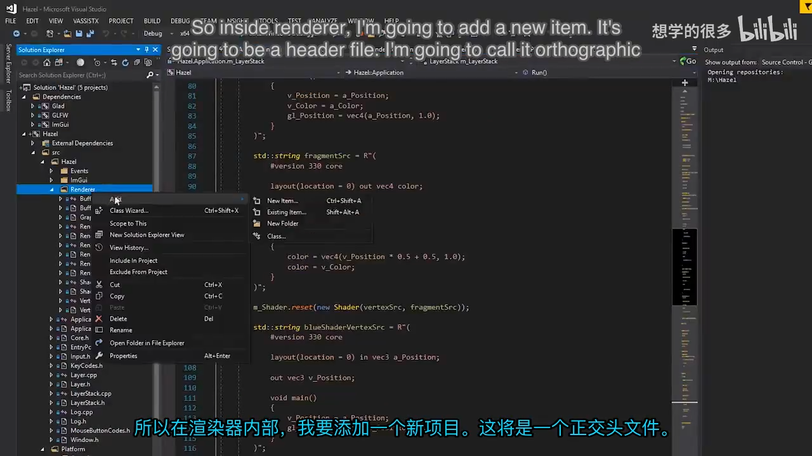
📷 OrthographicCamera 头文件保存三个矩阵、位置和旋转
回到原视频 (00:01:37)
2. 构造参数：left、right、bottom、top
(参考时间: 00:02:20)
正交投影不是根据 FOV 生成视锥，而是定义视口中的世界空间矩形：
left / right / bottom / top
这个矩形内的坐标会映射到屏幕。矩形越宽，同样大小的物体在屏幕上越小。
当前 glm::ortho() 还使用固定 Near/Far：
near = -1.0
far = 1.0
对于当前 2D 内容已经足够。未来可以扩展构造参数，把 Near/Far 暴露给上层。
graph TD
A[Orthographic Bounds] --> B[Left]
A --> C[Right]
A --> D[Bottom]
A --> E[Top]
A --> F[Near -1]
A --> G[Far +1]
B --> H[glm::ortho]
C --> H
D --> H
E --> H
F --> H
G --> H
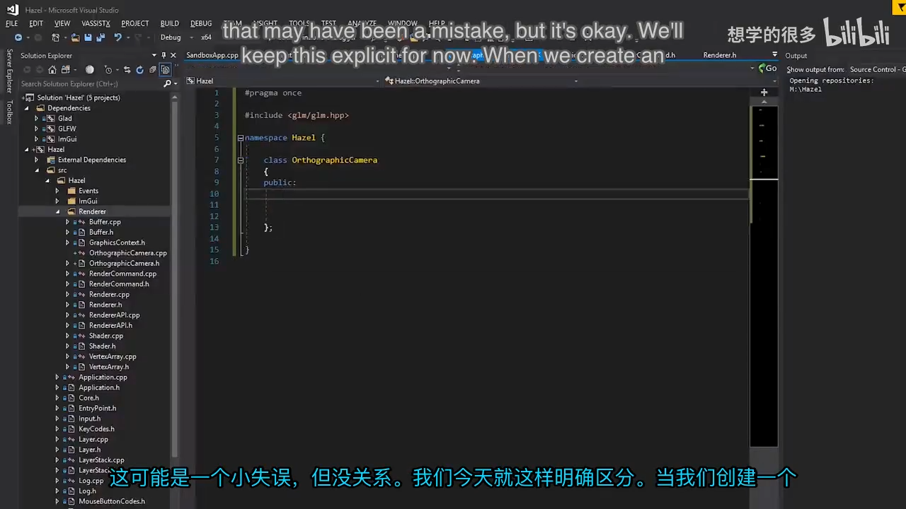
📷 正交相机通过左右上下边界定义可见矩形
回到原视频 (00:02:20)
3. 为什么要缓存 ViewProjection
(参考时间: 00:05:03)
Projection 与 View 需要分别保留，因为未来光照、调试或投影反算可能需要单独矩阵。
但每帧、每个对象都会使用 ViewProjection：
viewProjection = projection * view
如果每次调用都重新相乘，会产生重复工作。因此类中多缓存一个 4×4 矩阵，约多占 64 字节，却能让 Renderer 直接取得结果。
flowchart LR
A[Projection] --> C[ViewProjection]
B[View] --> C
C --> D[Cached mat4]
D --> E[Renderer BeginScene]
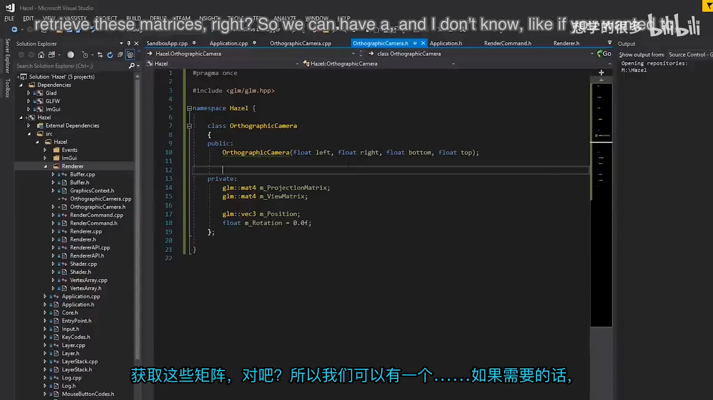
📷 缓存 VP 矩阵避免每帧重复相乘
回到原视频 (00:05:03)
4. Position 与 Z 轴旋转
(参考时间: 00:03:29)
正交相机保存：
glm::vec3 m_Position;
float m_Rotation;
这里的旋转是一个 float，表示绕 Z 轴的 2D 旋转，而不是欧拉角或四元数。
当前 Hazel 主要绘制 2D 场景，绕 X/Y 旋转会让平面物体离开正交相机可理解的范围。未来做 3D 时，Perspective Camera 会使用完整朝向表示。
graph TD
A[OrthographicCamera Transform] --> B[Position XYZ]
A --> C[Rotation around Z]
B --> D[Translation Matrix]
C --> E[Rotation Matrix]
D --> F[Camera Transform]
E --> F
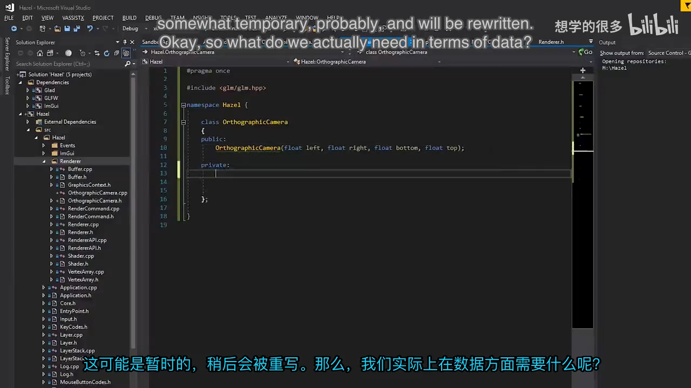
📷 2D 正交相机只需要位置与 Z 轴旋转
回到原视频 (00:03:29)
5. SetPosition / SetRotation 自动重算
(参考时间: 00:07:18)
改变位置或旋转后，View 与 ViewProjection 不能继续保持旧值：
void SetPosition(const glm::vec3& position)
{
m_Position = position;
RecalculateViewMatrix();
}
void SetRotation(float rotation)
{
m_Rotation = rotation;
RecalculateViewMatrix();
}
这里选择“变更即重算”。另一种做法是使用显式 OnUpdate() 或在帧末统一更新矩阵，但当前相机变化频率较低，直接重算更简单，也能避免忘记刷新状态。
stateDiagram-v2
[*] --> CameraReady
CameraReady --> PositionChanged: SetPosition
PositionChanged --> RecalculateView
CameraReady --> RotationChanged: SetRotation
RotationChanged --> RecalculateView
RecalculateView --> CameraReady
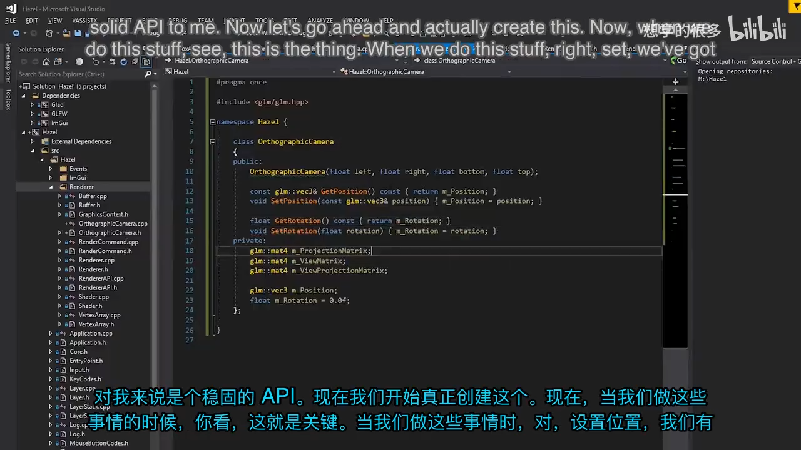
📷 Position 与 Rotation 修改后立即重算相机矩阵
回到原视频 (00:07:18)
6. 构造 Projection 与初始 View
(参考时间: 00:09:23)
构造函数实现：
OrthographicCamera::OrthographicCamera(
float left,
float right,
float bottom,
float top)
: m_ProjectionMatrix(
glm::ortho(left, right, bottom, top, -1.0f, 1.0f)),
m_ViewMatrix(1.0f)
{
m_ViewProjectionMatrix =
m_ProjectionMatrix * m_ViewMatrix;
}
两个关键点：
m_ViewMatrix(1.0f)明确构造单位矩阵；- 构造函数中也计算一次 VP，保证对象从创建起就处于可用状态。
不能依赖 ViewProjection 的默认值。未初始化的矩阵可能包含任意数字，第一次绘制就会出现不可预测画面。
sequenceDiagram
participant App
participant Cam as OrthographicCamera
App->>Cam: Construct(left,right,bottom,top)
Cam->>Cam: glm::ortho(...)
Cam->>Cam: View = Identity
Cam->>Cam: VP = Projection * View
Cam-->>App: Valid camera
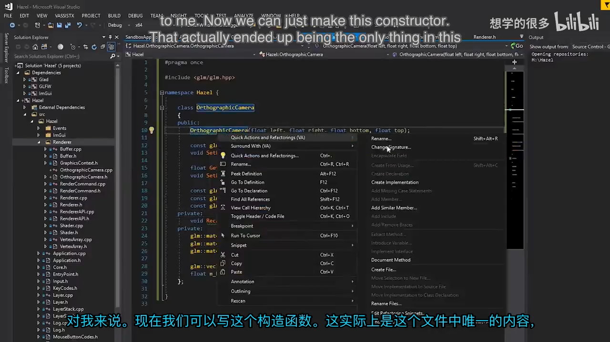
📷 构造函数生成正交投影并初始化有效 VP 矩阵
回到原视频 (00:09:23)
7. RecalculateViewMatrix 的推导
(参考时间: 00:11:07)
相机自身变换由平移和旋转组成：
glm::mat4 transform =
glm::translate(glm::mat4(1.0f), m_Position) *
glm::rotate(
glm::mat4(1.0f),
glm::radians(m_Rotation),
glm::vec3(0, 0, 1));
然后取逆：
m_ViewMatrix = glm::inverse(transform);
m_ViewProjectionMatrix =
m_ProjectionMatrix * m_ViewMatrix;
顺序必须先平移后旋转：
T * R
如果改成 R * T，相机会围绕世界原点旋转后再平移，运动轨迹会完全不同。
flowchart TD
A[Identity] --> B[Translate by Position]
B --> C[Rotate around Z]
C --> D[Camera Transform T*R]
D --> E[Inverse]
E --> F[View Matrix]
F --> G[Projection * View]
G --> H[ViewProjection]
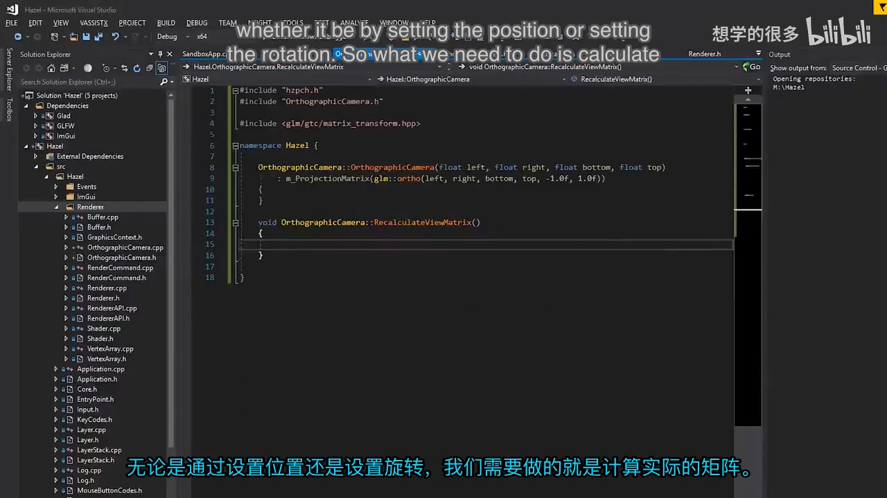
📷 相机变换按 T*R 组合，取逆后得到 View 矩阵
回到原视频 (00:11:07)
8. GLM 列主序下的 VP 乘法
(参考时间: 00:13:34)
代码写作：
m_ViewProjectionMatrix =
m_ProjectionMatrix * m_ViewMatrix;
虽然变量名是 ViewProjection，乘法顺序却必须让 Projection 在左、View 在右。
GLM 为 OpenGL 提供列主序矩阵，正确形式是：
P * V * M * vertex
如果写成 View * Projection，平移和投影的顺序会颠倒，画面通常完全错误。
graph LR
A[Vertex] --> B[Model]
B --> C[View]
C --> D[Projection]
D --> E[Clip Position]
F[Code: Projection * View] --> D
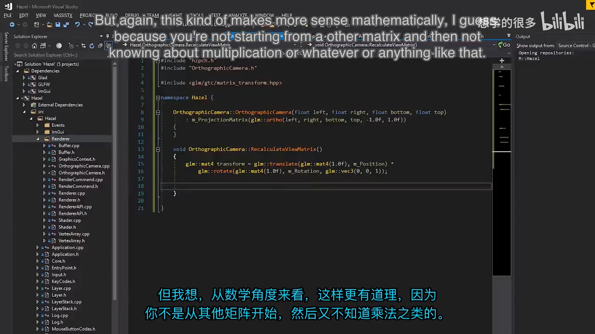
📷 列主序下 VP 必须按 Projection * View 计算
回到原视频 (00:13:34)
9. Application 持有正交相机
(参考时间: 00:14:40)
Application 增加成员：
OrthographicCamera m_Camera;
构造函数初始化：
Application::Application()
: m_Camera(-1.6f, 1.6f, -0.9f, 0.9f)
{
}
这组边界形成 16:9 的宽高比：
(1.6 - -1.6) / (0.9 - -0.9) = 3.2 / 1.8 = 16:9
相机作为值成员存在于 Application 中，不需要 shared_ptr。它跟随 Application 生命周期，Renderer 只在 BeginScene 时读取它。
classDiagram
class Application {
-OrthographicCamera m_Camera
+Run()
}
class OrthographicCamera
Application *-- OrthographicCamera
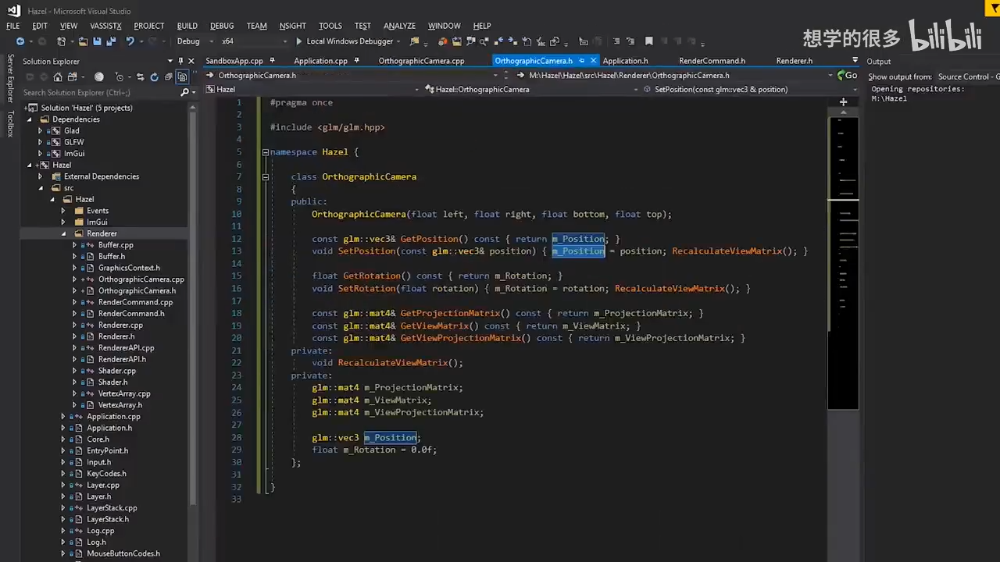
📷 Application 以值成员持有一个正交相机
回到原视频 (00:14:40)
10. Shader 中的 ViewProjection uniform
(参考时间: 00:16:28)
两个 Vertex Shader 都增加：
uniform mat4 u_ViewProjection;
顶点位置改为：
void main()
{
v_Position = a_Position;
v_Color = a_Color;
gl_Position =
u_ViewProjection * vec4(a_Position, 1.0);
}
u_ 前缀只是命名约定，用来让 CPU 侧代码一眼识别 uniform。
当前尚未加入 Model 矩阵，所以这里直接用 VP 变换对象顶点。
graph TD
A[CPU ViewProjection] --> B[u_ViewProjection]
C[a_Position attribute] --> D[vec4 position,1]
B --> E[Matrix multiply]
D --> E
E --> F[gl_Position]
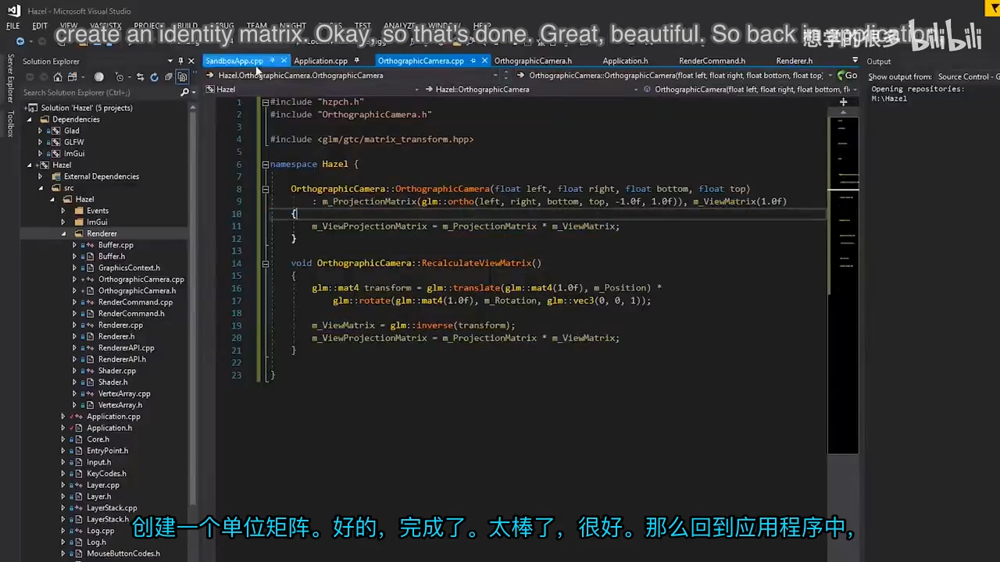
📷 Vertex Shader 使用 u_ViewProjection 变换输入顶点
回到原视频 (00:16:28)
11. Shader 添加 UploadUniformMat4
(参考时间: 00:18:36)
Shader 接口增加：
void UploadUniformMat4(
const std::string& name,
const glm::mat4& matrix);
调用前必须已经绑定 Shader：
shader->Bind();
shader->UploadUniformMat4(
"u_ViewProjection",
viewProjection);
上传函数本身不再调用 glUseProgram()。一次绘制可能需要上传多个 uniforms，由调用方绑定一次 Shader 后集中上传更高效。
sequenceDiagram
participant R as Renderer
participant S as Shader
participant GL as OpenGL
R->>S: Bind()
S->>GL: glUseProgram(program)
R->>S: UploadUniformMat4(name, matrix)
S->>GL: glGetUniformLocation
S->>GL: glUniformMatrix4fv
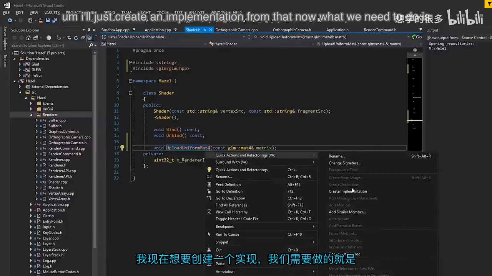
📷 Shader 暴露 Mat4 uniform 上传接口
回到原视频 (00:18:36)
12. glUniformMatrix4fv 参数
(参考时间: 00:20:05)
OpenGL 实现：
void Shader::UploadUniformMat4(
const std::string& name,
const glm::mat4& matrix)
{
GLint location =
glGetUniformLocation(m_RendererID, name.c_str());
glUniformMatrix4fv(
location,
1,
GL_FALSE,
glm::value_ptr(matrix));
}
参数含义：
location：uniform 在 Shader Program 中的位置；1：上传一个矩阵；GL_FALSE：GLM 已经是列主序，不需要转置；glm::value_ptr()：指向矩阵首元素的连续 float 内存。
如果 location 返回 -1，说明名称不存在或未被 Shader 使用。当前实现直接上传；后续可以加入错误检查。
flowchart TD
A[uniform name] --> B[glGetUniformLocation]
B --> C{location}
C --> D[glUniformMatrix4fv]
E[GLM mat4] --> F[glm::value_ptr]
F --> D
D --> G[Shader uniform updated]
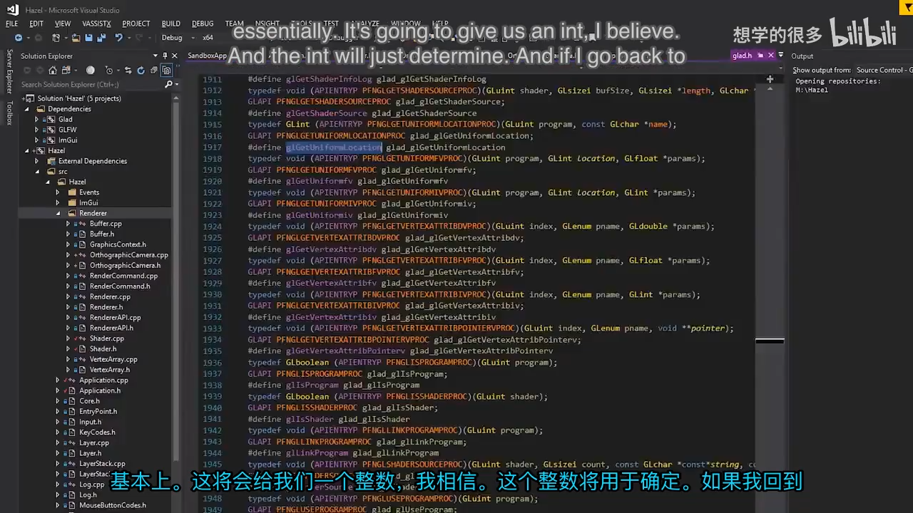
📷 UploadUniformMat4 查询位置并上传 GLM 矩阵数据
回到原视频 (00:20:05)
13. 第一次运行：画面保持不变
(参考时间: 00:22:31)
第一次接入 camera VP 后，画面仍与上一讲一致。
这说明：
- 正交矩阵覆盖范围与原 NDC 坐标一致；
- Shader uniform 已成功上传；
- VP 矩阵的基础乘法和绑定顺序正确；
- 之前只缺少相机数据的传递。
编译时曾出现 Camera 类型未知错误，因为相机头文件被包含在了错误的文件位置。补到 Application 头文件后构建成功。
flowchart LR
A[Camera VP] --> B[Shader uniform]
B --> C[Same vertex positions]
C --> D[Same rendered image]
D --> E[Basic data path validated]
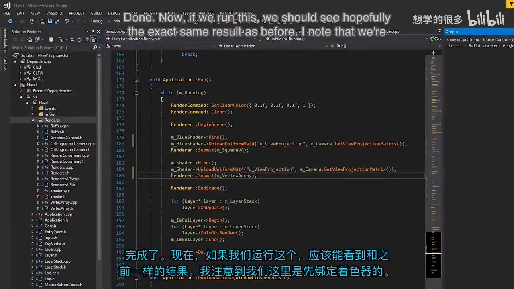
📷 初次接入相机后，正交画面与上一讲保持一致
回到原视频 (00:22:31)
14. 修改正交边界就是改变“视野”
(参考时间: 00:23:03)
把投影边界从：
-1 .. +1
扩大为：
-2 .. +2
相机能看到更大的世界区域，相同物体在屏幕上就会变小。
这相当于正交相机没有透视的“缩放”。改变边界与移动相机是不同操作：
- 扩大 left/right/top/bottom：缩放视野；
- 修改 camera position：平移观察位置。
flowchart TD
A[Small Orthographic Bounds] --> B[Object fills more screen]
C[Large Orthographic Bounds] --> D[Object appears smaller]
E[Camera Position Change] --> F[Objects shift on screen]
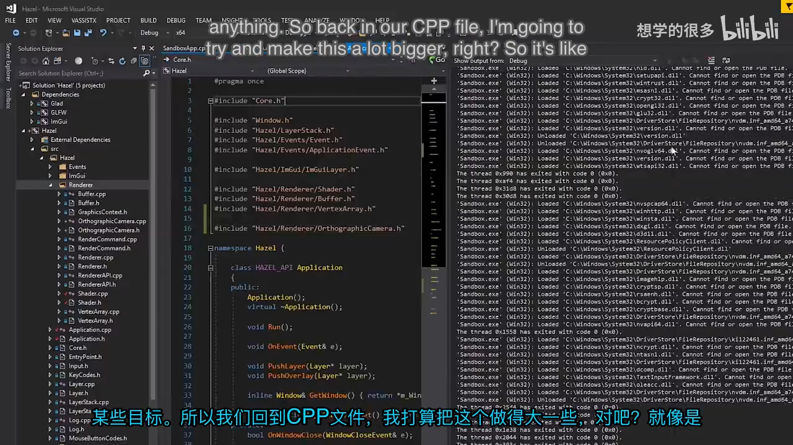
📷 扩大正交边界后，相同场景在屏幕上变小
回到原视频 (00:23:03)
15. Aspect Ratio 修复与方形变形
(参考时间: 00:25:08)
方块顶点在 X/Y 上都是 -0.75 .. 0.75，但一开始显示为长方形。
原因是投影边界使用相同的 X/Y 范围，而窗口是 1280×720。Camera 认为可见区域是正方形，Framebuffer 却把它拉伸到 16:9。
修复边界：
OrthographicCamera camera(
-1.6f, 1.6f,
-0.9f, 0.9f);
此时：
3.2 / 1.8 = 16 / 9
方块恢复正方形，三角形也随之得到正确比例。
graph TD
A[Square vertices] --> B{Projection aspect}
B -- 1:1 on 16:9 viewport --> C[Stretched rectangle]
B -- 16:9 in projection --> D[Correct square]
D --> E[Viewport and projection aligned]
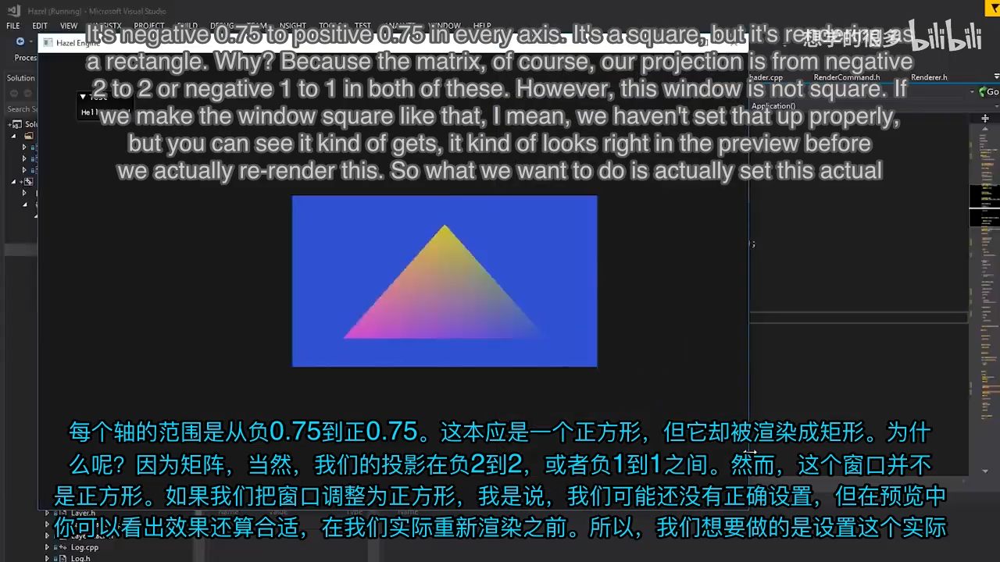
📷 正交投影的宽高比必须与窗口宽高比匹配
回到原视频 (00:25:08)
16. BeginScene 改为接收 Camera
(参考时间: 00:27:27)
Renderer 接口：
static void BeginScene(OrthographicCamera& camera);
实现：
void Renderer::BeginScene(OrthographicCamera& camera)
{
m_SceneData->ViewProjectionMatrix =
camera.GetViewProjectionMatrix();
}
这里没有复制整个 Camera。Camera 包含多个矩阵和成员，复制成本高；Renderer 真正需要的是 ViewProjection 快照。
传引用避免复制整个对象，但只把矩阵复制进场景状态。
sequenceDiagram
participant App
participant Cam as OrthographicCamera
participant R as Renderer
App->>R: BeginScene(camera&)
R->>Cam: GetViewProjectionMatrix()
Cam-->>R: const mat4&
R->>R: Copy VP into SceneData
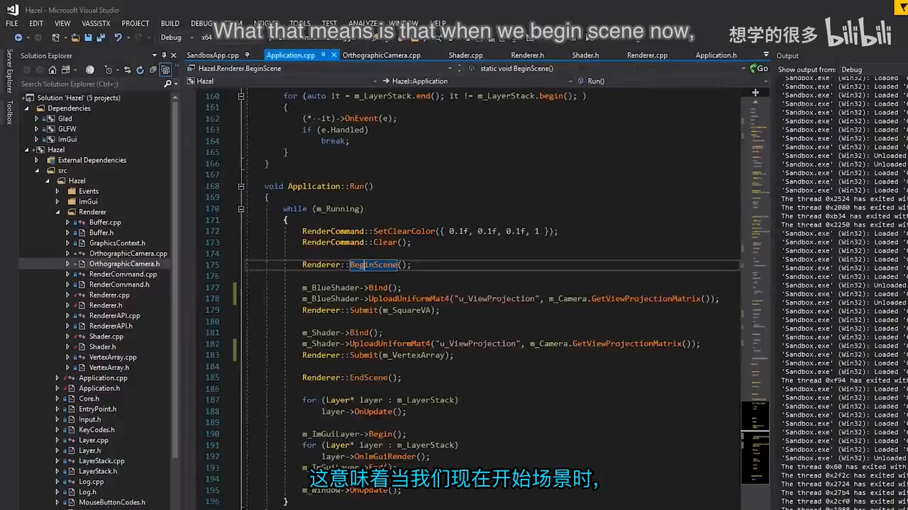
📷 BeginScene 从相机读取并复制 VP 矩阵
回到原视频 (00:27:27)
17. SceneData 保存当前场景 uniform
(参考时间: 00:29:16)
Renderer 内部增加：
struct SceneData
{
glm::mat4 ViewProjectionMatrix;
};
static SceneData* m_SceneData;
当前在 Renderer.cpp 中分配：
Renderer::SceneData* Renderer::m_SceneData =
new Renderer::SceneData;
这是临时实现：
- Renderer 是静态类；
- 需要一个地方保存当前场景状态；
- SceneData 随引擎整个生命周期存在；
- 未来会重构为更正式的 Renderer Context / Scene Renderer。
graph TD
A[Renderer] --> B[static SceneData*]
B --> C[ViewProjectionMatrix]
D[BeginScene] --> C
C --> E[Submit uniforms]
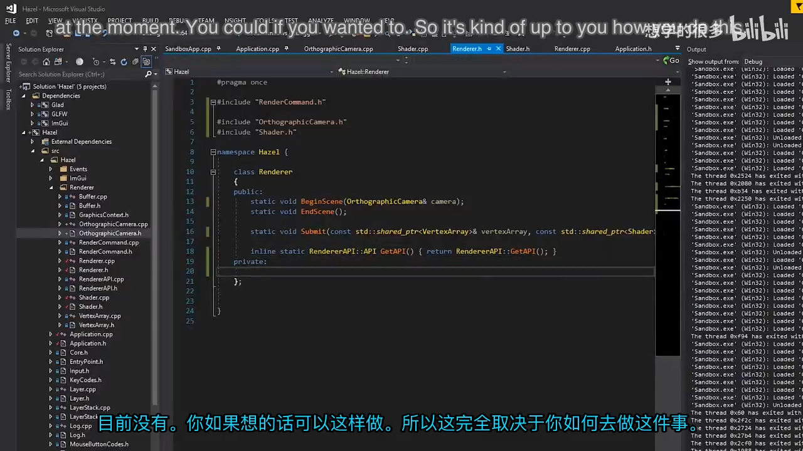
📷 SceneData 暂时保存当前场景的 ViewProjection
回到原视频 (00:29:16)
18. Submit 接收 Shader 并上传场景 uniform
(参考时间: 00:31:17)
Renderer 提交接口改为：
static void Submit(
const std::shared_ptr<Shader>& shader,
const std::shared_ptr<VertexArray>& vertexArray);
实现：
void Renderer::Submit(
const std::shared_ptr<Shader>& shader,
const std::shared_ptr<VertexArray>& vertexArray)
{
shader->Bind();
shader->UploadUniformMat4(
"u_ViewProjection",
m_SceneData->ViewProjectionMatrix);
vertexArray->Bind();
RenderCommand::DrawIndexed(vertexArray);
}
Shader 放在参数前面，因为 Shader 决定“怎样渲染”，几何决定“渲染什么”。未来 Mesh/Material 会进一步封装这两类信息。
sequenceDiagram
participant App
participant R as Renderer
participant S as Shader
participant VA as VertexArray
App->>R: Submit(shader, vertexArray)
R->>S: Bind
R->>S: Upload u_ViewProjection
R->>VA: Bind
R->>R: DrawIndexed
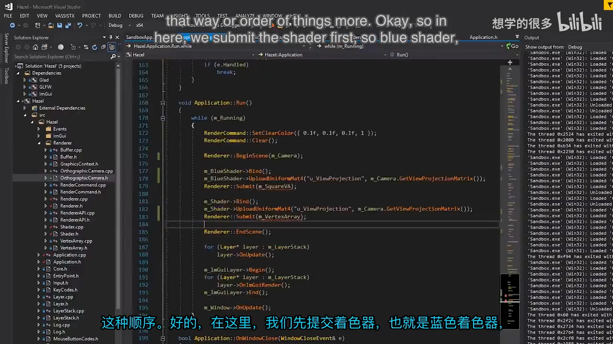
📷 Submit 绑定 Shader、上传场景 VP、绑定 VAO 并绘制
回到原视频 (00:31:17)
19. Application 的最终渲染流程
(参考时间: 00:31:42)
Run 循环现在非常简洁：
RenderCommand::SetClearColor({ 0.1f, 0.1f, 0.1f, 1 });
RenderCommand::Clear();
Renderer::BeginScene(m_Camera);
Renderer::Submit(m_BlueShader, m_SquareVA);
Renderer::Submit(m_Shader, m_VertexArray);
Renderer::EndScene();
旧代码中的手动 Shader 绑定与 uniform 上传全部移除。对象绘制统一通过 Renderer 流程。
flowchart TD
A[Clear] --> B[BeginScene camera]
B --> C[Submit blue shader + square VA]
C --> D[Submit gradient shader + triangle VA]
D --> E[EndScene]
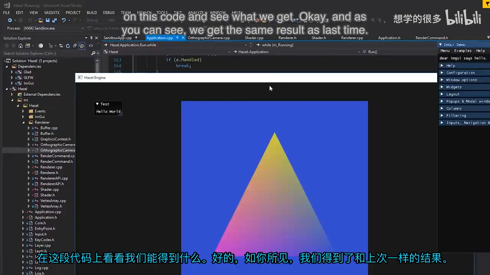
📷 Application 只负责清屏、BeginScene、两次 Submit 和 EndScene
回到原视频 (00:31:42)
20. 平移测试验证 View 逆矩阵
(参考时间: 00:32:31)
把相机位置设为：
m_Camera.SetPosition({ 0.5f, 0.5f, 0.0f });
相机向右上移动，场景在屏幕上向左下移动。
方向反转说明：
- Position 已写入相机变换；
- View 矩阵确实取了逆；
- ViewProjection 已重新计算；
- Shader 读取了新值。
graph LR
A[Camera +0.5 X/Y] --> B[View inverse]
B --> C[Scene -0.5 X/Y]
C --> D[Objects move down-left]
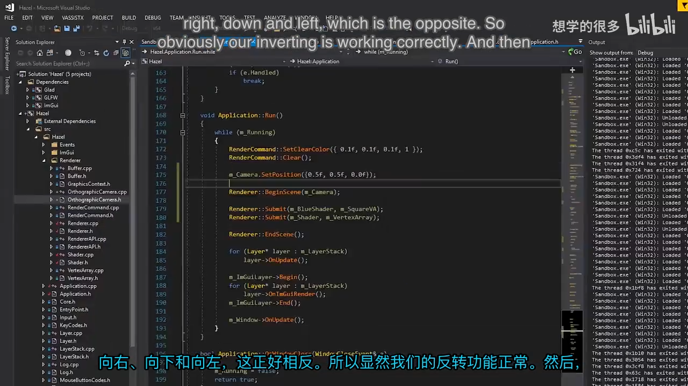
📷 相机向右上移动时，场景向左下移动
回到原视频 (00:32:31)
21. 旋转测试失败：GLM 向量未初始化
(参考时间: 00:33:19)
设置：
m_Camera.SetRotation(45.0f);
画面却完全空白。第一反应是旋转单位错误，于是加入 glm::radians()，但问题仍然存在。
进一步在调试器检查 RecalculateViewMatrix()：
- rotation 是 0.5；
- position 不是
(0, 0, 0)； - GLM 向量在当前构造方式下没有被置零；
- 未初始化的 position 产生无效相机变换，场景被移出可视范围。
修复：
glm::vec3 m_Position = { 0.0f, 0.0f, 0.0f };
重新运行后，旋转 45° 正常工作。
flowchart TD
A[Rotation makes screen blank] --> B{Radians correct?}
B -- Yes, still blank --> C{Inspect matrix inputs}
C --> D[Position contains garbage]
D --> E[Initialize vec3 to zero]
E --> F[Rotation works]
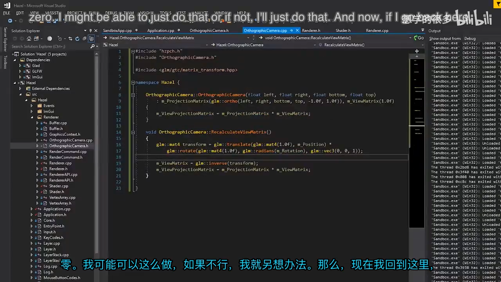
📷 旋转画面消失的根因是 Camera 位置向量未初始化
回到原视频 (00:34:51)
22. 旋转与平移组合
(参考时间: 00:35:43)
修复后同时设置：
m_Camera.SetPosition({ 0.5f, 0.5f, 0.0f });
m_Camera.SetRotation(45.0f);
两个对象同时旋转并偏移，方向与预期一致。
这验证了：
T * R的转换顺序；glm::radians()的旋转单位；- View 逆矩阵；
- 位置和旋转变化后的 VP 重算；
- Shader 每帧接收新 VP。
flowchart LR
A[Camera Position] --> C[T * R]
B[Camera Rotation] --> C
C --> D[Inverse = View]
D --> E[Projection * View]
E --> F[Objects rotate and shift]
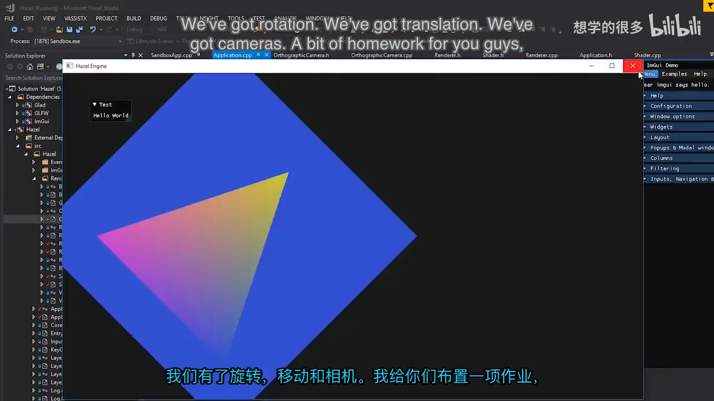
📷 相机平移与 45 度旋转同时生效
回到原视频 (00:35:43)
23. 当前限制与下一步
(参考时间: 00:36:08)
当前 Renderer Submit 每次都：
- 绑定 Shader；
- 上传 ViewProjection；
- 绑定 VAO；
- 发出 Draw Call。
如果连续绘制很多使用同一 Shader 的对象，会重复上传相同的 VP。未来应：
- 收集所有提交项；
- 按 Shader / Material 分组；
- 每个 Shader 只上传一次场景 uniforms；
- 对相同材质对象合批；
- 再为每个对象上传 Model 矩阵。
下一步还可能处理：
- Shader uniform 系统；
- Model / Transform 矩阵；
- 相机控制器；
- 更正式的 Scene Renderer；
- 把演示代码从 Application 移到 Sandbox。
flowchart TD
A[Current immediate Submit] --> B[Shader bind]
B --> C[VP upload]
C --> D[Draw]
E[Future batching] --> F[Group by shader]
F --> G[Upload VP once]
G --> H[Upload model/material per object]
H --> I[Draw batch]
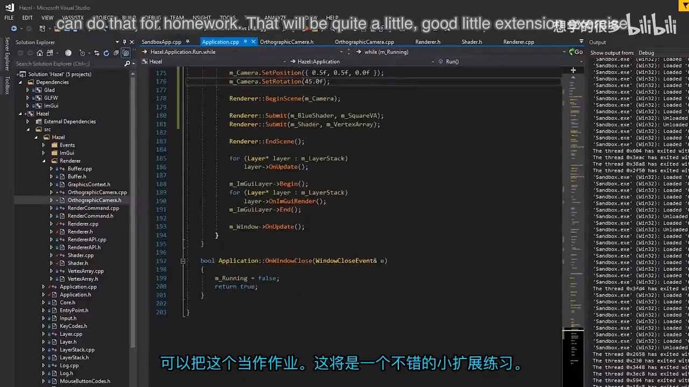
📷 当前立即提交可用，未来需要按 Shader/Material 合批
回到原视频 (00:36:08)
24. 本节结论
本讲完成 Hazel 的第一个正交相机实现：
- 建立
OrthographicCamera类； - 用
glm::ortho()创建 Projection； - 缓存 View 与 ViewProjection；
- 用 Position 与 Z 轴 Rotation 生成相机变换；
- 对相机变换取逆得到 View；
- 将 Camera 加入
Renderer::BeginScene()； - 用 Renderer SceneData 保存 VP；
- 为 Shader 增加
UploadUniformMat4()； - 通过
glGetUniformLocation()与glUniformMatrix4fv()上传矩阵； - 在 Vertex Shader 中用
u_ViewProjection变换顶点； - 修正 16:9 窗口下的投影宽高比；
- 验证相机平移使场景反向移动；
- 定位并修复未初始化的 GLM Position；
- 验证平移与旋转组合；
- 让 Application 渲染流程保持简洁。
这一讲不仅接上了上一讲规划的数据流，也展示了矩阵代码最常见的两类调试问题：比例不一致与成员未初始化。最终画面正常，并不代表矩阵一直正确；通过平移、旋转和极端参数逐项验证，才能确认相机变换链完整可靠。